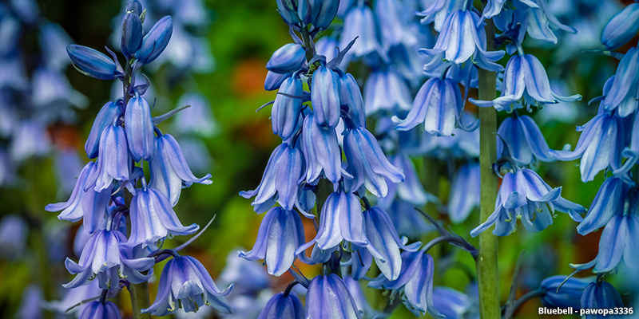
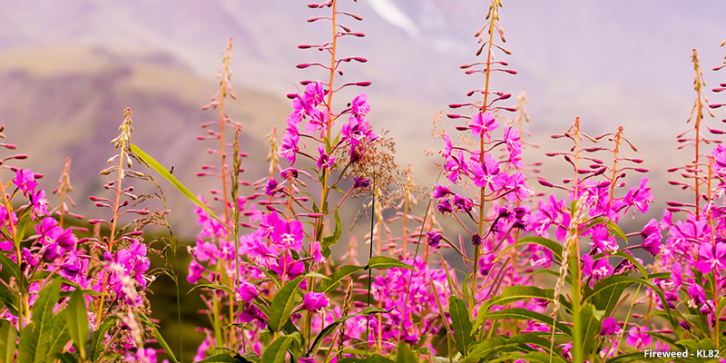

Let's learn about wildflowers
Here are some Wildflowers in Colorado
The Colorado Blue Columbine
The Rocky Mountain Columbine is a wildflower you will find all over the state, as it is the official state flower for Colorado.
The Bluebell
The bluebell is a very delicate flower that looks just like a bell, hence its' name.
Fireweed
The fireweed flower has the ability to grow extremely fast and typically it grows in areas struck by wildfires. This flower is able to survive high altitude areas.
Go learn more here